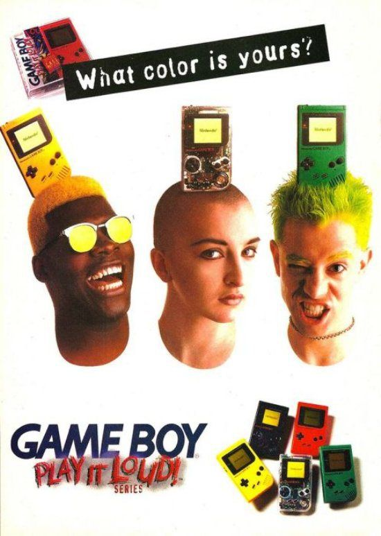

Nintendo Gameboy COLOR ©
-

History
Development for the Game Boy Color began in 1996, when Nintendo received requests from game developers for a more sophisticated handheld platform, who said that even the latest iteration of the original system, the Game Boy Pocket, had insufficient hardware.[citation needed][11] Nintendo developed the console concurrently with its successor, the Game Boy Advance (which was codenamed “Atlantis” at the time). The resultant product was backward compatible with all existing Game Boy software, a first for a handheld system, allowing each new Game Boy family launch to begin with a significantly larger game library than any of its competitors. On March 23, 2003, the Game Boy Color was discontinued.[7]
-
Specs
The processor, which is a Zilog Z80 workalike made by Sharp with a few extra (bit manipulation) instructions, has a clock speed of approximately 8 MHz, twice as fast as that of the original Game Boy. The Game Boy Color has three times as much memory as the original (32 kilobytes system RAM, 16 kilobytes video RAM). The screen resolution is the same as the original Game Boy at 160×144 pixels. The Game Boy Color features an infrared communications port for wireless linking. The feature is only supported in a small number of games, so the infrared port was dropped from the Game Boy Advance line, to be later reintroduced with the Nintendo 3DS, though wireless linking would return in the Nintendo DS line using Wi-Fi. The console is capable of displaying up to 56 different colors simultaneously on screen from its palette of 32,768 (8×4 color background palettes, 8x3+transparent sprite palettes), and can add basic four-, seven- or ten-color shading to games that had been developed for the original 4-shades-of-grey Game Boy. In the 7-color modes, the sprites and backgrounds are given separate color schemes, and in the 10-color modes the sprites are further split into two differently-colored groups; however, as flat black (or white) was a shared fourth color in all but one (7-color) palette, the overall effect is that of 4, 6, or 8 colors. This method of upgrading the color count results in graphic artifacts in certain games; for example, a sprite that is supposed to meld into the background is sometimes colored separately, making it easily noticeable. Manipulation of palette registers during display allows for a rarely used high color mode, capable of displaying more than 2,000 colors on the screen simultaneously.[15]
-
Other
Game Boy Color exclusive games are housed in clear-colored Game Pak cartridges.[19] They are shaped differently than original Game Boy Game Paks. Notably, these cartridges lack a notch that prevented the original Game Paks from being removed while the original Game Boy was powered on due to a plastic piece attached to the power switch, which would slide over the notch, locking a cartridge inside the system during gameplay (although some special cartridges like Kirby Tilt 'n' Tumble[20] do include this notch). The lack of this notch keeps original Game Boy systems loaded with Game Boy Color cartridges from powering on. Similarly, Game Boy Pocket, Super Game Boy, Super Game Boy 2, and Game Boy Light will power on when loaded with a Game Boy Color cartridge but will refuse to load the game and will display a warning message stating that a Game Boy Color system is required. This same warning message can be viewed on an original Game Boy as well if the piece that slides into the notch is cut out of the Game Boy. Some Game Boy cartridges such as Chee-Chai Alien[21][22] and Pocket Music[23] cannot be played on Game Boy Advance and Game Boy Advance SP systems. When inserted and powered on, these systems will exhibit a similar error message and will not load the game.